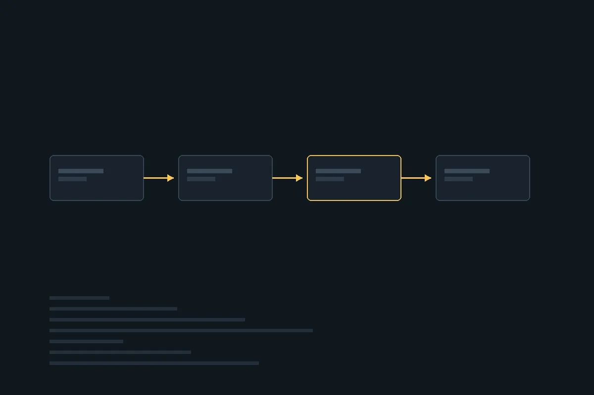

Konsulent · Oslo · siden 2005
Teknologi fortjener kloke mennesker.
Capra er et konsulentselskap i Oslo med rundt 100 utviklere, arkitekter, UX-designere, teknologiledere og organisasjonsdesignere.
90+ konsulenter6 år uten ledergruppeSiden 2005
01 — Tjenesteområder
Der vi er ekstra gode
Fire områder, med selvledende konsulenter som tar egne valg.

02 — Om Capra
Uten ledergruppe, med ansvar
Capra ble startet i 2005 for å sette mennesker foran prosess. Uten ledergruppe tar konsulentene egne valg – om oppdrag, utvikling og ansvar. Vi vokser organisk ved å finne folk som deler verdiene våre.
- 2005 – startet for å sette mennesker først.
- 6 år – uten ledergruppe.
- 90+ – selvledende konsulenter.
03 — Slik jobber vi
Fire steg
Som et team, ikke som en leveranse.
- Forstå
Hva som faktisk skal løses.
- Team
Sette sammen riktig kompetanse.
- Bygge
Iterativt, med kunden tett på.
- Overlevere
Kunnskap blir igjen hos kunden.
Store nok til å levere. Små nok til å bry oss.
Ta kontakt for en samtale om teamet, produktet eller organisasjonen.